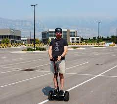
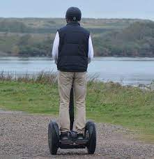

Documenting my trip around the US on my very own Segway!
Today's weather is quite nice actually. Have been travelling for a while now but still can't get enough of this.

Well I made it 1200 miles already, and I passed through some interesting places on the way:
| City | Date | Temperature | Altitude | Population | Diner Rating | |
|---|---|---|---|---|---|---|
| Walla Walla, WA | June 15th | 75 | 1, 204 ft | 29, 686 | 4/5 | |
| Magic City, ID | June 25th | 74 | 5, 312 ft | 50 | 3/5 | |
| Bountiful, UT | July 10th | 91 | 4, 226 ft | 41, 173 | 4/5 | |
| Last Chance, CO | July 23rd | 102 | 4, 780 | 265 | 3/5 | |
| Truth or Consequence, NM | August 9th | 93 | 4, 242 ft | 7, 289 | 5/5 | |
| August 27th | 98 |
|
||||
| Why, AZ | August 18th | 104 | 860 ft | 480 | 3/5 |
I saw some Burma Shave style sign on the side of the road today:
Passing cars,
When you can't see,
May get you,
A glimpse,
Of eternity.
I definitely won't be passing any cars!.

My first day of the trip! I can't believe finally got everything packed and ready to go. Because I'm on a Segway, I wasn't able to bring a whole lot with me:
Just the essentials. As Lao Tzu would
have said, A journey of a thousand miles begins with
one Segway.
The <html> element rocks.
Secret location: Ðετröìτ.